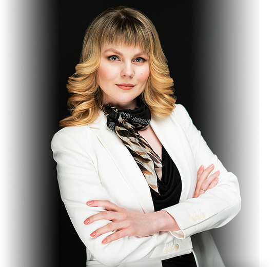

Я работаю с самым важным — именем и репутацией. Делаю из обычного человека узнаваемый бренд. Создаю репутацию, добиваюсь публикаций, исправляю поисковую выдачу — беру продвижение «под ключ».
Делаю из обычного человека узнаваемый бренд. Я работаю с самым важным — именем и репутацией. Создаю репутацию, добиваюсь публикаций, исправляю поисковую выдачу — беру продвижение «под ключ».
Я работаю с самым важным — именем и репутацией. Создаю репутацию, добиваюсь публикаций, исправляю поисковую выдачу — беру продвижение «под ключ». Делаю из обычного человека узнаваемый бренд.
Создаю репутацию, добиваюсь публикаций, исправляю поисковую выдачу — беру продвижение «под ключ». Я работаю с самым важным — именем и репутацией. Делаю из обычного человека узнаваемый бренд.Изучить кейсы
- Персональный
PR-менеджер - Директор
PR-агентства - Автор книги
- Бизнес-консультант
Для кого работаю и какие задачи решаю
-
Первые лица компанийТипичная ситуация: работы много, на личный брендинг времени нет. Я позабочусь о репутации, разгружу рабочий график и закрою вопросы, связанные с пиаром и продвижением. Уже 10 лет я руковожу PR-агентством, поэтому знаю, как работать с первыми лицами компании. Понимаю, о чем говорить и о чем умолчать. Мы обозначим цели на старте и пропишем условия конфиденциальности в договоре.
-
Звезды шоу-бизнесаНе пытайтесь совместить творческий и рутинные процессы. Такой подход опасен и приводит к творческом застою и нервным срывам. В работе со звездами я выступаю как пресс-секретарь: составляю и рассылаю пресс-релизы, договариваюсь о публикациях и выступлениях, контролирую выпуск статей и рекламных материалов. Расслабьтесь и занимайтесь творчеством, необходимую рутину я возьму на себя.
-
Частные специалистыЯ помогаю врачам, адвокатам, психологам, фитнес-тренерам – тем, кто хочет расширить целевую аудиторию и получить больше заказов. Начинающим специалистам подойдет формат почасовых консультаций, на которых мы разбираем ошибки и я даю ответы на вопросы клиента. Также я могу разработать отдельно PR-стратегию и передать ее вам для реализации. Вы достигнете результатов сами, выполняя прописанные указания. Это дешевле, чем продвижение «под ключ» и также эффективно.
Чем занимаюсь
-
Продвижение персоны «под ключ»Продвигаю клиента по всем фронтам: с публикациями, съемками, переговорами, рекламными материалами и работой в социальных сетях. Все под контролем и личной ответственностью.Узнать подробнее
-
Организация публикаций в СМИПомогаю попадать на страницы нужных изданий на регулярной основе. С командой ищем инфоповоды, пишем текст, рассылаем пресс-релизы и добиваемся публикации в заявленное время.Узнать подробнее
-
Ведение страниц в социальных сетяхРаботаю с личными аккаунтами в VK, Facebook и Instagram. Моя команда генерирует интересный контент, ведет ваши страницы, расширяет аудиторию подписчиков и работает с отзывами.Узнать подробнее
-
Создание персональных сайтовВ моей команде есть копирайтеры, дизайнеры, верстальщики. Я руковожу процессом и презентую готовый сайт, который решает ваши задачи.Узнать подробнее
-
Написание и продвижение книгСобираем ваши идеи и мысли, структурируем их и создаем сильный, интересный текст. Либо редактируем ваш вариант, как удобнее. Помогаем с выпуском книги и ее продвижением.Узнать подробнее
-
Консультация по личному брендингуРазрешаю сложные ситуации, даю советы и разбираю конкретные ситуации. Консультирую лично и в скайпе, минимальное время консультация – один час.Узнать подробнее
Реальные кейсы
Читать все кейсыОбо мне говорят
-
Николай Додонов Работа, которую выполняет Алексей, позволяет вот уже 6 лет моим сайтам занимать позиции в ТОП10. Я рекомендую не только заказать аудит, но и тщательно выполнить все рекомендации по его итогам.
-
Николай Додонов Работа, которую выполняет Алексей, позволяет вот уже 6 лет моим сайтам занимать позиции в ТОП10. Я рекомендую не только заказать аудит, но и тщательно выполнить все рекомендации по его итогам.
-
Николай Додонов Работа, которую выполняет Алексей, позволяет вот уже 6 лет моим сайтам занимать позиции в ТОП10. Я рекомендую не только заказать аудит, но и тщательно выполнить все рекомендации по его итогам.
-
Николай Додонов Работа, которую выполняет Алексей, позволяет вот уже 6 лет моим сайтам занимать позиции в ТОП10. Я рекомендую не только заказать аудит, но и тщательно выполнить все рекомендации по его итогам.
Блог о персональном брендинге и эффективном PR

Руководство «Барселоны» намерено как можно скорее решить вопрос продления контракта
Руководство «Барселоны» намерено как можно скорее решить вопрос продления контракта. Руководство «Барселоны» намерено как можно скорее решить вопрос продления контракта.
Руководство «Барселоны» намерено как можно скорее решить вопрос продления контракта
Руководство «Барселоны» намерено как можно скорее решить вопрос продления контракта. Руководство «Барселоны» намерено как можно скорее решить вопрос продления контракта.
Руководство «Барселоны» намерено как можно скорее решить вопрос продления контракта
Руководство «Барселоны» намерено как можно скорее решить вопрос продления контракта. Руководство «Барселоны» намерено как можно скорее решить вопрос продления контракта.

Руководство «Барселоны» намерено как можно скорее решить вопрос продления контракта
Руководство «Барселоны» намерено как можно скорее решить вопрос продления контракта. Руководство «Барселоны» намерено как можно скорее решить вопрос продления контракта.
Руководство «Барселоны» намерено как можно скорее решить вопрос продления контракта
Руководство «Барселоны» намерено как можно скорее решить вопрос продления контракта. Руководство «Барселоны» намерено как можно скорее решить вопрос продления контракта.
Руководство «Барселоны» намерено как можно скорее решить вопрос продления контракта
Руководство «Барселоны» намерено как можно скорее решить вопрос продления контракта. Руководство «Барселоны» намерено как можно скорее решить вопрос продления контракта.
Рассылка
«Личный бренд своими руками»
Хотите знать, как продвигать себя самостоятельно? Тогда получайте полезные материалы на почту. «Личный бренд своими руками» – это рассылка без болтовни. Только конкретика: кейсы, советы и проверенные механики.
- Работаю в рамках договора конфиденциальности (NDA)
- Выполняю поставленные цели, KPI прописываю в договоре
- Беру продвижение «под ключ»